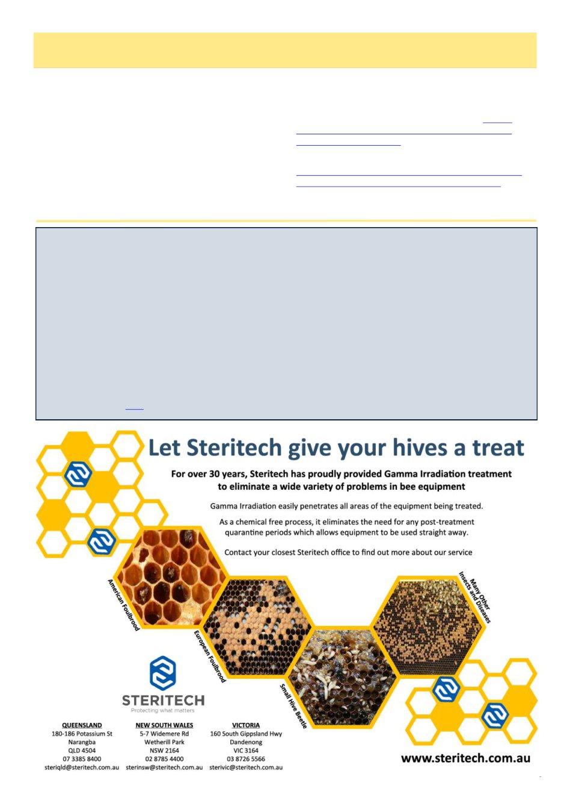

June 2026
7
Thousands of beekeepers submit honey to benefit environmental science in the UK
National Honey Monitoring Scheme provides a massive archive of bee-derived data
PLOS
Beekeepers and their honeybees can be invaluable participants in environmental surveys, according to a study
published May 20, 2026 in the open-access journal PLOS One by Jennifer Shelton of the UK Centre for Ecology &
Hydrology and colleagues.
Honeybees can be extremely useful collectors of environmental data, since they gather plant materials from a wide
area and amass it in a convenient central location. However, traditional methods of collecting these data are costly
and time-consuming and have only been successful at relatively small scales.
In this study, Shelton and colleagues present the results of the UK National Honey Monitoring Scheme (NHMS),
which enlisted the volunteer assistance of over 3,500 beekeepers across England, Wales, Scotland, and Northern
Ireland between 2018 and 2025. These citizen scientists submitted 5,789 samples of honey from their hives, and
researchers extracted DNA from pollen grains within the honey to identify which plants the bees were visiting.
These analyses identified over 800 species of plants utilized by honeybees and pinpointed the most commonly
visited species, including cultivated canola, clovers, and invasive Himalayan balsam.
Read the full article here
Bags Of Dead Bees, cont’d
hope-not-leaking bag of multiple hives‘ worth of dead
alcohol soaked bees in your car.
Every step that makes proper varroa management
more tedious makes people less likely to perfectly con-
duct the ideal implementation of Best Management
Practices in the ways that actually matter. I‘d rather a
commercial beekeeper successfully check his 10 hives
each in four apiaries than think to himself ―ah I‘m un-
der the pump and don‘t want to have 40 hives worth of
dead bees in a bag steaming in the cab with me all day,
she‘ll be right.‖
1 Plant Health Australia (2025) Australian Honey Bee
Industry Biosecurity Code of Practice (Version 2.1).
Canberra: Plant Health Australia.
2 Livestock Disease Control Act 1994 (Vic). https://
www.legislation.vic.gov.au/in-force/acts/livestock-
3 Livestock Disease Control Regulations 2017 (Vic).
https://www.legislation.vic.gov.au/in-force/statutory-
rules/livestock-disease-control-regulations-2017
(Continued from page 6)